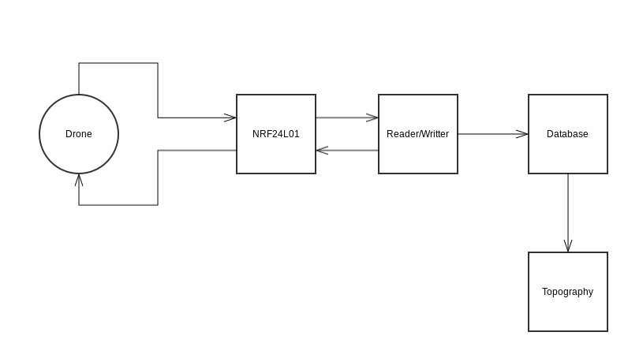
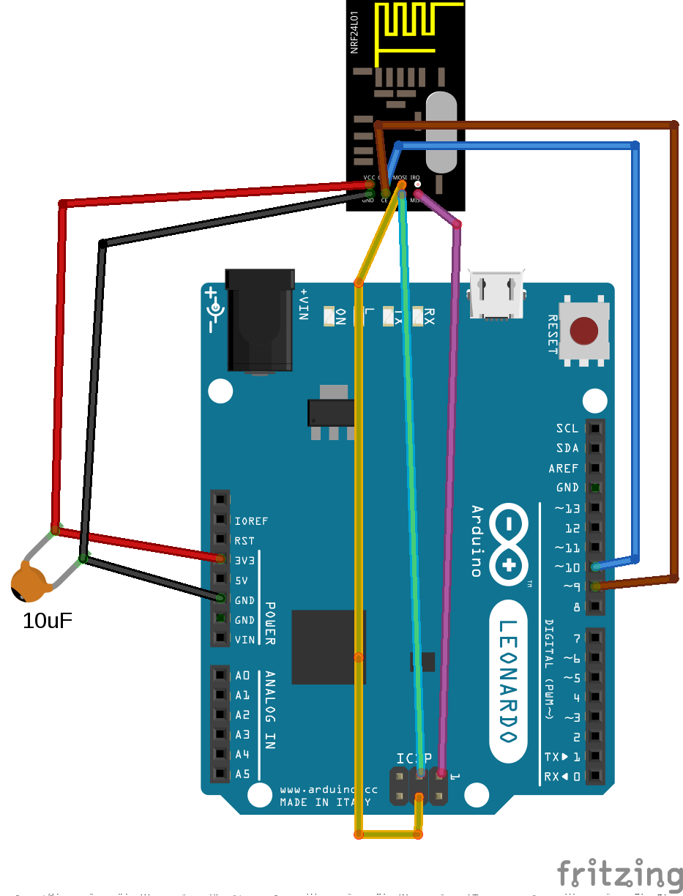

今まで、記事がドローンしかについて話しませんでしたけど、サーバーも作らなければなりません。今、サーバーを殆ど作って出来ました。ジャイロスコープの使いを習う事が長かったから、同時にサーバーの事を作りました。
この記事でサーバーの行いを紹介して、ヴィデオで実証をします。
無線通信の記事で説明したように、サーバーとドローンが無線通信で一緒に伝えます。あの連絡は地形を作る為と、ドローンの状態と、ドローンへ命令を伝える為情報です。
各無線通信は唯一のアドレスに関与させます。だから、各ドローンはサーバーのアドレスを知って、あのアドレスで伝えます。然し、サーバーはアドレスのセットを知っています（各ドローンのアドレス）から、個人のドローンと伝える事が出来ます。
サーバーは三つの部分で構成させます。一つの身体の部分(NRF24L01)と、ドローンから送った情報をデータベースに記入する部分と、データベースの内容を読んで地形を描く部分です
それで、自立な同時に行うタスクが三つあります。もし、三つの部分が一つのタスクにありますと、多分、ループの行いの時間だから、数のメッセージを送り遅れます。
このタスクの役割はドローンより送ったメッセージをシリアルポートに写しです。もし、サーバーはドローンへ命令を送りたかったら、このタスクで出来ます。普通は、サーバーのモードが受け取りです。だから、サーバーのループの役割は受け取ったメッセージの読みです。然し、もし読み書きのタスクがメッセージをシリアルポートに書いたら、サーバーは送りモードにスイッチします。
このタスクの役割はシリアルポートの読み書きです。普通は、シリアルポートの内容を絶えず読んでデータベースに各メッセージを入れます。もし、命令を送りたかったら、シリアルポートに書いてNRF24L01のタスクがドローンに送ります。
このタスクの役割はデータベースの内容を読んで地形の描きです。ループの中でデータベースの1目のデータを読みます(データベースはキューみたいです)。そして、分析する地帯を表現する行列にあのデータを入れます。地帯の広さを知りませんから、この行列のサイズを良く変更します。
これから、行列の内容をスクリーンに描きます。
例えば、ドローンは[10, 12, 130]を送ります。行列の(10, 12)の素子は130です。それで、行列の索引は地位で、素子はドローンとドローンの下物の間の距離です。図形は色々な点のセットです。点の色は行列の素子に応じて変わります。
下には1目のタスクのコードです。
#include
#include
#include
#define NB_DRONE 1
Communication com(8, 10);
bool ok;
uint8_t msgDrone[11];
uint8_t lenMsgDrone = sizeof(msgDrone);
int i = 0;
void setup() {
Serial.begin(9600);
ok = com.initRadio();
delay(1000);
if(!ok) {
Serial.println("Init error");
}
}
void loop() {
//For each drone write on serial port received message
for(i = 0; i < NB_DRONE; i++) {
ok = com.receiveMsg(msgDrone, lenMsgDrone, i + 1);
if(ok) {
Serial.print("d:");
Serial.print(msgDrone[0]);
Serial.print(";x:");
Serial.print(msgDrone[1]);
Serial.print(";y:");
Serial.print(msgDrone[2]);
Serial.print(";z:");
Serial.print(msgDrone[3]);
Serial.print(";s1:");
Serial.print(msgDrone[4]);
Serial.print(";s2:");
Serial.print(msgDrone[5]);
Serial.print(";s3:");
Serial.print(msgDrone[6]);
Serial.print(";s4:");
Serial.print(msgDrone[7]);
Serial.print(";s5:");
Serial.print(msgDrone[8]);
Serial.print(";s6:");
Serial.print(msgDrone[9]);
Serial.print(";msg:");
Serial.println(msgDrone[10]);
}
}
delay(400);
}
このタスクがNRF24L01に直接に働きかけますから、Arduinoで作ってさせました。知っているアドレスを全部歩き回ってシリアルポートにメッセージを書きます。
ドローンへメッセージを送りの機能をまだ作らない事が気付きます。後で作ります。
今、2目のタスクを見ましょう。
import serial
import redis
import sys
r = redis.StrictRedis(host='localhost', port='6379', db=0)
arduino = serial.Serial('/dev/ttyACM1', 9600)
while True:
msg = arduino.readline()
msg = [int(m.split(':')[1]) for m in msg[:-2].split(';')]
print msg
r.lpush(sys.argv[1], msg)
簡単にする為にPythonで作りました。データベースはRedisのクライアントです。あのデータベースの使いはとても簡単です。そして、SQLの強いリクエストは要りませんから、Redisが完璧な解決です。
見えるように、プログラムはシリアルポートの内容を読んで、Redisのリストに写ります。前のタスクように、ドローンへメッセージを送りの機能をまだ作りません。
実現の部分を終える為に、最終のタスクのコードです。
#!usr/bin/python3.4
#-*-coding:utf-8-*
import matplotlib.pyplot as plt
import numpy as np
from matplotlib import cm
import redis
import sys
name_area = sys.argv[1]
r = redis.StrictRedis(host = "localhost", port = 6379, db = 0)
data = np.zeros([0, 0])
fig, ax = plt.subplots()
cax = ax.imshow(data, cmap = cm.hot_r, origin = "lower")
ax.set_title(name_area + "'s topography")
cbar = fig.colorbar(cax)
cbar.ax.get_yaxis().set_ticks([])
cbar.ax.text(1.2, 0, "> 0", ha="left", va="center")
cbar.ax.text(1.2, 0.5, "150", ha="left", va="center")
cbar.ax.text(1.2, 1, "< 300", ha="left", va="center")
ax.patch.set_facecolor('white')
plt.show(block = False)
#Read from redis list and add to plot each new value available
while True:
e = r.blpop(name_area)[1][1:-1].replace(' ', '').split(',')
e = [int(i) for i in e]
if(e[1] > data.shape[0]): #We need to resize the matrix
tmp = np.zeros([e[1], data.shape[1]])
tmp[0:data.shape[0], 0:data.shape[1]] = data
data = tmp
if(e[2] > data.shape[1]):
tmp = np.zeros([data.shape[0], e[2]])
tmp[0:data.shape[0], 0:data.shape[1]] = data
data = tmp
if e[3] - e[9] < 0: #If distance > Max distance
data[e[1] - 1, e[2] - 1] = 0
else:
data[e[1] - 1, e[2] - 1] = e[3] - e[9]
cax = ax.imshow(data, cmap = cm.hot_r, origin = "lower", interpolation = "nearest")
plt.draw()
このプログラムは入れたデータを読む為に、前のタスクと同じRedisクライアントに接続します。ループの前の部分はプロットと行列を初期化します。ループの中でRedisのリストを読んで、行列にデータを入れて(必要だったら、サイズを変更します)、行列の内容をスクリーンに描きます。
最終の条件は簡単な理由の為に、必要です。使う超音波センサーの計る事が出来る最大距離が5メートルです。もし、ドローンと地面の間に5メートル以上だと、センサーは無限な距離を計ります。この場合に、ドローンの高度と計った距離の減法が負数だから、プロットの中で纏まったを守る為に０に決めます。
プロットについて、使いが簡単し、Pythonの開発者の共通性の中で人気だから、MatPlotlibのライブラリを使う事が決めました。
この記事を終える為に、実にサーバーの行いのヴィデオです。加速度計でドローンの地位を確定出来ませんから、サーバーに送った地位が本当ではありません。